春天在哪里？ @ Feb 16, 2009
咦！早晨居然下小冰珠子了。
天气预报说今天是小雨加雪的天气。
春天，又不见踪影啦！
咦！早晨居然下小冰珠子了。
天气预报说今天是小雨加雪的天气。
春天，又不见踪影啦！
招聘会上，一家公司要求每位应聘者必须填写一份表格，回答几个问题。这是一位女大学生填写的求职承诺!
一、谈恋爱了吗？
我的EQ很低，对男孩子没感觉。所以，五年内保证不恋爱；五年后万一不慎恋爱了，保证五年内不结婚；五年后万一不得不结婚了，保证五年内不生孩子；五年后万一不小心必须生孩子了……那应该是四十五岁以后的事了吧，你们可以考虑辞退我了。
二、能喝酒吗？
二十五年来从来没有喝过酒，不过，如果工作需要，喝；不是工作需要，但领导有要求，喝；客户有要求，喝；有酒量，喝；没酒量，创造酒量也要喝；实在喝不下去了，吃解酒药，喝；喝得烂醉如泥、不省人事、胡言乱语、上吐下泻了，那也并不表示我不愿意喝，麻烦领导直接将酒灌进我的喉咙里，只要能灌进去，就行。只有一个请求，曲终人散后帮忙将我送进医院。
三、希望什么岗位？
我是学人力资源管理的，是管理学学士，英语六级，最好能在管理岗位；不能在管理岗位，做个打字、收发信件的文书也行；不能当文书，在办公室扫地、端水、抹桌子……打打杂也行；打杂不行，下车间、到班组也行。
四、期望多少薪酬？
五十万？想都不敢想；二十万？痴人说梦；十万？绝不可能；六万？非常非常满意；四万？非常满意；两万？满意；一万？我知道不是月薪，是年薪，我也……满意。如果公司还有困难的话，打张白条，也行。
五、能出差吗？
短期的，可以；长期的，也可以。短途的，可以；长途的，也可以。与女上司一起出差，可以；陪男上司单独出差，也可以。有出差补助，坐火车，住旅店，下馆子，最好；没出差补助，坐驴车，住澡堂子，泡方便面，也没关系。
六、你还有什么要说的？
我大学毕业两年多了，跑过几十场招聘会，投了几百份求职简历，都石沉大海了。有人说，给我一个支点，我能把地球撬起来。可我今天想说的是，这么大个地球，就不能给我一个支点吗？我只是需要一个岗位啊！给我一个岗位，让我养活我自己吧！（来源：上海热线）
澳洲也在下雨，所以这个懒家伙没外出，所以第一张是Hank拍的，有孩子的他，玩具都搁车上啦？第二张是啥鸟？黑乎乎的，我想说那是不是....
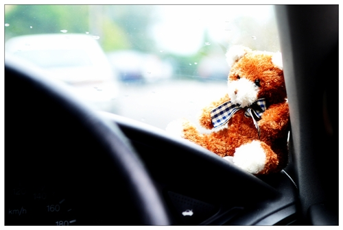

南京下雨了，还不小呢。
当我开始用相机记录日志后，才发现自己的眼睛近视的厉害。
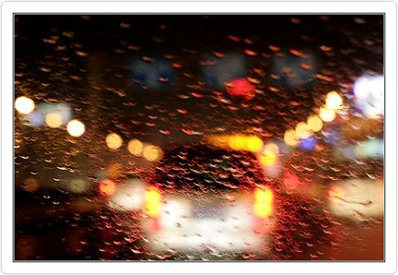

jiajialing说：情人节，大雨倾盆。。。eastwood的菜场依旧人山人海，开车兜了一大圈依旧没有情人的味道。好吧，那就记录一点情人节的光，情人节的影。。。挺无聊的。

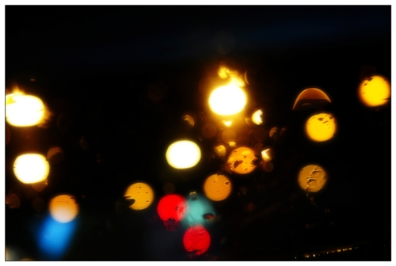
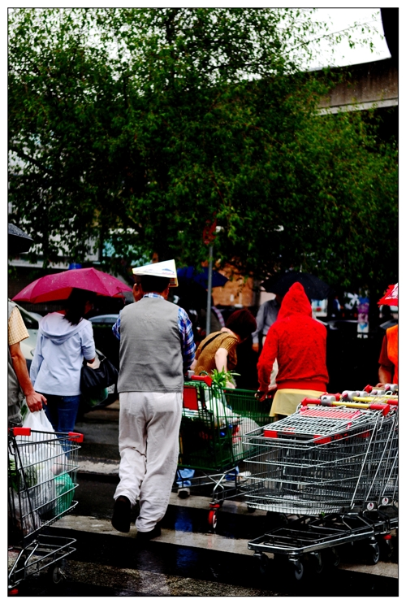
Christina：情人节带LUKE去宠物店美容，见到许多排队等着洗澡的宠物狗。
jiajialing说：第一张狗狗真他娘的可爱
Christina说：跟你长的很象，一副愤青样儿
jiajialing说：哦是啊，那你就是第二张了，一副怨天尤人的样儿
Christina说：靠，我早神清气爽了
jiajialing说：哦，了解，变成第三张了
Christina说：去死

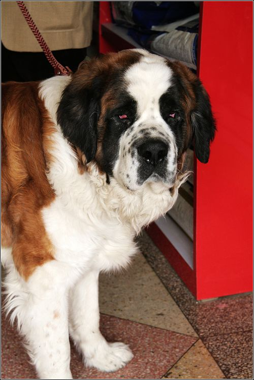

这是LUKE见着就追的埃及女王的黑猫；

邻居家的高加索犬，是烈性犬哦。三个月大，个头已经比LUKE大了许多；

趴着围栏看LUKE，那爪子跟戴着白手套似的。
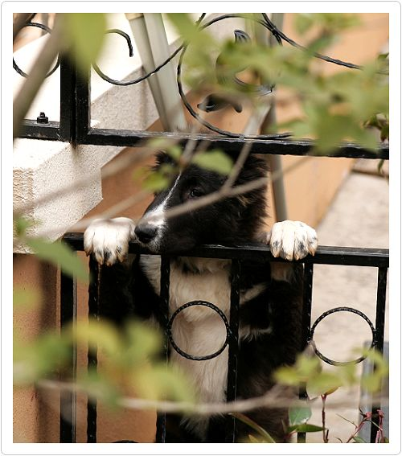
LUKE跳进院子外的小树丛和它亲亲嘴，就跑开了。
自由是多么珍贵啊，看看LUKE和它就知道。
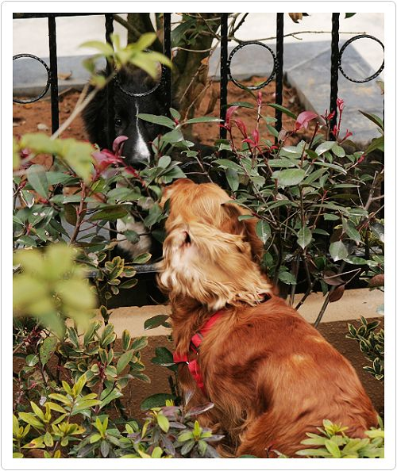
LUKE守在树下冲着那只埃及女王的黑猫狂吠，凶狠的小白牙又暴露出来了。
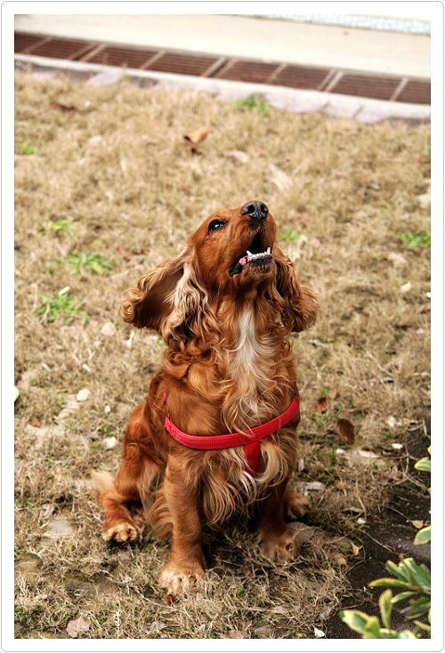
jiajialing拍摄。
第一张居然是2007年的相片，真够怀旧的~
反复观看第一张相片，今天感受到的是焦虑。
以前看感受到的是惆怅。
你真是喜欢浓郁的色彩，张张红是红黑是黑蓝是蓝的，澳洲的色彩一定比这里丰富吧？


星期五，疲劳。
从精神到肉体，也许是被阴天整的。
也不想说话。
*那只装酒的盒子不知被谁扔在小区的围栏外面，中国人钱多的同时却没见素质和修养提高多少；
*今天5：51分下班，只想早早回家，充分利用属于自己的时间；
*那是晚上拍的植物，和白天有什么不同吗？
*邻居家的小朋友，手里拿着5元人民币，就那么认真地拿着，没有任何表情，总觉得怪怪的。


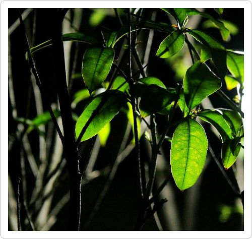

少爷写了篇为麦西物色对象的BLOG，看来做爸爸妈妈的都一样，会操心自己狗狗的终身大事。春节前我也帮LUKE物色了一个GF。在一家商店门口，有位中年妇女牵了条可卡，没我家LUKE漂亮，应该是英卡和美卡的混血。我热情地上去搭讪，问对方主人想不想给狗狗配，女主人说想呀，我马上给她留下电话号码，并索要了对方号码，还把手机里LUKE的照片给她看。她说不错不错，等我家狗狗发情的时候，就打电话联系。
LUKE是公的，所以只要母狗主人同意就行。
可以前养的妞妞是母的，不会随便让妞妞配的。生下来的BABE总要担负起责任吧。
国内养狗的秩序很糟糕，政府除了收钱给狗上户口，没见他们管过什么。任由配种、买卖是非常自由的。非典时期我家收养了一只满脸鼻涕的小金巴，我父亲带它去宠物医院看病好多次，鼻涕没有了，但是呼吸道还是有问题。如果让它流浪街头，结果就是被街道和派出所的人打死。收留它，在非典时期是很危险的行为。我们一家人商量后还是收养它了。一段时间之后小金巴变得很漂亮，和我家小小生育了两个孩子，均送给邻居了，他们现在生活的很健康。可是小金巴第二次怀孕后被偷掉了。这些被偷去的狗或被卖或被吃掉，对于偷狗的人来讲，哪怕是50元的收入，或是打打牙祭都是好的！
另外，我不能理解的是好多女性怀孕前后就会将狗狗送走，难道就没有科学的手段防疫可能发生的感染吗？那也只是“可能”。听说国外怀孕妇女打一些防疫针，怀孕期间只要不和狗狗亲密接触，是可以避免的。
从50年代到90年代，一场又一场的打狗运动，真的是狗的问题吗？而不是人的问题，是政策多变的问题？
从一个人对待动物的态度上来判断一个人和一个政府的道德水准。虽然不一定100%准确，但常常八九不离十。印度先圣甘地有句名言：“ 一个残忍虐待动物的民族，是没有希望的民族。”
请看这篇《 冷眼看打狗》
下文来自少爷：Post again for Miss Chinese Tea
麦西这个周末就满两周岁了。当妈的，开始操心她的终身大事。
查了好多资料，都说两岁时，是最好的怀孕时机。当然，狗狗的受孕时间是在她的例假期间。例假一般会延续三周左右。且半年到一年才来一次。麦西漂亮又健康，一年来两次。来例假后的第十三天到二十一天间，是受孕期。
我这个妈有点糊涂。每次等到她来例假了，才惊觉得找男朋友哇，否则时间一过，就得等半年。可在那么短的时间内，怎么能找到合适的男友？又不能跟其它种族的混婚。 前不久又错过了一次。我就想，这次早做规划，先去物色男友，定好亲，等半年后，我们就直接把她送上门去。
我先联系了一个远房亲戚--布鲁鲁的表妹。平时极少联系。但听说她有两条这类的公狗。我就厚着脸给她电话。她很诚恳地表示，很乐意帮这个忙，只是不得不说，跟你的狗比起来，我的两条真的好丑。 他们的耳朵不够长，而且性格不好。她说如果你的麦西能有小狗，她首先想买一条。我一听，这肯定没戏了。
然后上网查了附近一些养狗的，有的听了电话，然后就上门去看。一个都没看上。这时才发现，这女的长得好看了，真的很难找对象。那些公狗都显得挺委琐。加上不是亲戚，跟这么丑的公狗搞一下，我们还得付150胖子。经历了一天的搜寻，发现看到的都是那种工作型的狗（working type dog)，不是选美型的狗（show type dog)，走了弯路后，及时回头，再上网查show type dog。
这就一下打开的视野。还是有许多漂亮的，几乎跟她长得一模一样的公狗们，分散在英国各地。最近的一处，是她原来的主人处。我们不能去找她，因为她有话在先，说不想让她有下一代，所以不卖公狗给我们，也不会让她的公狗来配种。她和散布在各地的主人一样，都是英国史宾格狗俱乐部的成员。我看了一下成员手则，就是要培育更漂亮，更好的狗。因此不能随便让外人加入进来。我看到的言下之意是：垄断市场。
怎么样才能搞到一条同样漂亮的公狗呢？还要打破这个垄断，的确让我费脑子。 这些俱乐部的成员真的疯得不轻，在网上打出来的广告说，我的这条公狗已经和很多冠军约会过，并生了好多个冠军等等，然后把配种价格抬高到600胖子，还很野蛮地说，不包怀孕，搞完拉倒。 布鲁鲁一听说，那就拉倒呗，这个价格我都可以自己买条小公狗，慢慢养了。等长大，想怎么搞都行。
一年一度的冠军赛正好就在家附近举行。我想去现场看一下，或许能碰上一个象样的成员，能让我成一笔交易呢。好多漂亮的狗狗，远远看去，就象是麦西克隆出来的。一个主人很友好，我对他的五条公狗很感兴趣。我问他，你这些狗卖吗？他指着其中一条，说，它五岁，不过今天才拿了个亚军。你想要买的话，我可以考虑。又问我，你买了后，会有时间看护它么？我假装说，当然了，我是家庭主妇，平时闲在家没事，才从中国过来，很寂寞，想要条狗来陪陪。 他态度马上变了，说要那样的话，待会儿你跟我老婆说一下，她要是也同意的话，我们就卖给你。不过，你只可以买狗，我们不会卖给你它的出生证明的。 （这是防止拿此狗作种狗的一种方法，在英国，没有出生证明的父母狗，生的小狗是卖不出去的）。我一听就知道没戏了。这时候，突然就看到了麦西的前主人，正在展她的麦西的妈妈或姨妈，外婆之类的。我和布鲁鲁吓得恨不得戴上面具去。胡乱看了一把，只好灰溜溜回家了。
唉，现在唯一的办法是去买一条刚出生的纯种狗。这些俱乐部的成员垄断了市场，但还是向外人出售小狗的。还是有很多谎要撒，要假称没有狗，只是买来当宠物养，等等。联系了一家，远在苏格兰。这月中旬小狗们两个月大，就可以往外出售了。但经过这番折腾，加上长路漫漫，也不知道结果如何。好的话，麦西会有个姐弟恋了。
jiajialing拍摄。
*这是用什么软件调出来的颜色，真好看。
*新闻里说澳大利亚的“多美滋”奶粉也让宝宝们吃出了肾结石，可官方并未证明此事，孩子们的家长准备联合起来起诉。
*国内的芝华士、红方黑方假酒成灾，一瓶成本价才17元，批发给经销商20元，娱乐场所和酒店从经销商那里批发70~100元/瓶，到了消费者那里就是600~1000多元了。那外形做的真是一模一样。

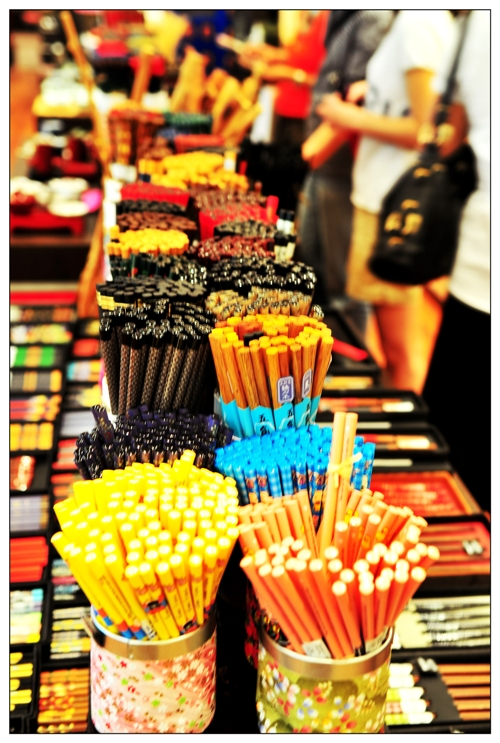

Christina拍摄。
我的颜色开始在这个季节里上演。
Sherry说：“你的气色越来越好~”
心情好，身体才会好啊。
可就在昨天我还朝emma票务河东狮吼了一番。
明天就能收到定购的票啦，好开心！
在家人安排下，我去医院做了个全套检查，医生说很健康，为这话我又会很开心。
不过部分化验结果要等到明天才能看到，不能乐观太早。
有关开心还是需要自己调整心态、心境，远离不开心的人和事。
这段时间连续听到两个朋友抱怨工作上想一展身手，却又感到很无奈，停顿不前。
我们为什么不愿老去，还保有着年轻心态，是因为在生活中我们不愿意妥协，如果你不想结婚可以不结婚，在我们还没弄懂这个世界之前还是不要孩子的好。可是，工作却不一样了，尽力而为之后还是不能改变，那么顺其自然吧，干吗和自己过不去呢？

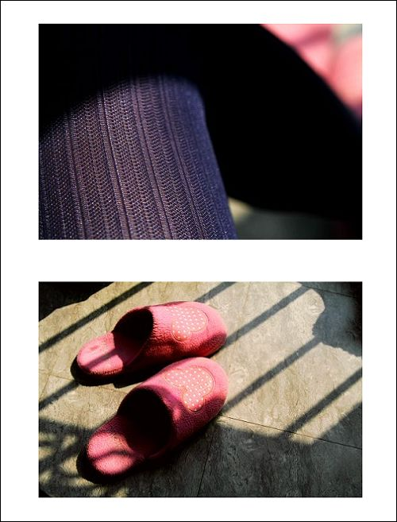
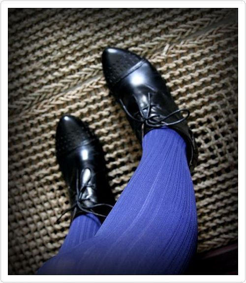

和薇安的相机日志持续一周，昨天结束。
今天开始和在澳大利亚悉尼的jiajialing继续下面的相机日志。
jiajialing是我现实生活中的好朋友，我的摄影一直跟随他的步伐前进的。
可是我这个跟随者并没下太多功夫在研究理论上，更多的是随性而为。
由于晚上和sherry约了见面，照片通过邮件传送过来。那么，今天我们将没有独白和相互的评语。澳洲快进入秋季了吗？以往他的相片能带出人内心里的东西，虽然他时常把我拍的很丑：）这次......仍然期待有佳片共享！
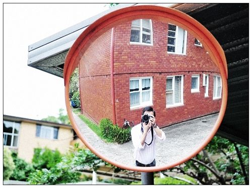

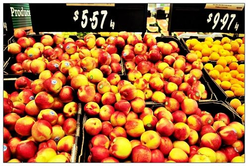

这张是我用手机拍摄的。
左图是个广告灯箱，右图是看菜单的sherry，这些光线的拖影和模糊的画面具有某种缺陷的美感。

感谢少爷提供给狗狗“理发”的信息。

少爷养了一条史宾格犬，我的邻居有条史宾格和麦西一样一样花斑的，是警犬研究中心进口犬的第二代。据我对这两只狗的观察，近亲也有差别。
史宾格：稳重、冷静，只认主人，对其他人比较冷淡。步伐轻盈、矫健；
英卡：得瑟、易兴奋，小碎步，后脚有点内八字，天真的一塌糊涂。
麦西，迷人的小样儿！
回头想想LUKE，那头顶是杂草丛生哦~
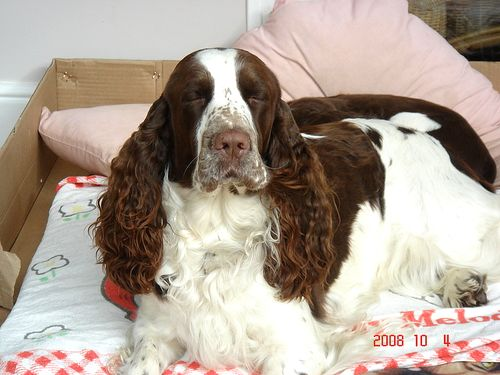
麦克是只5个月大的公狗，在英国公狗小于七个月，与母狗生下的小狗不能正规注册，算
黑户口。当麦西遇到麦克，麦西穿上了内裤！
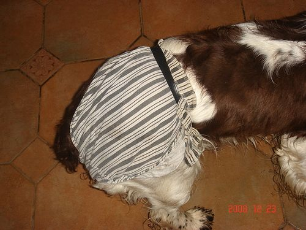